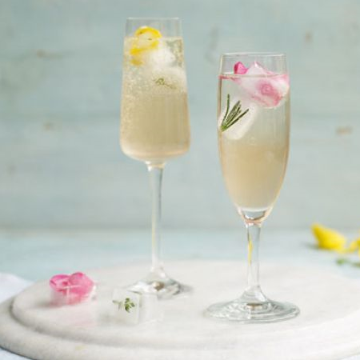

Elderflower & herb cooler

Ingredients :
- 2 thyme sprigs, leaves only
- 2 rosemary sprigs, leaves only
- 8 edible flowers (such as pansies, rose petals and borage)
- 50ml elderflower cordial
- 150ml elderflower liqueur
- 150ml gin
- ice
- sparkling water
How to make :
- Pop the herbs and flowers into the holes of an ice cube tray, fill with water and freeze for 2-3 hrs or until frozen solid.
- Pour the elderflower cordial, elderflower liqueur, gin and a large handful of ice cubes into a large jug. Stir until the outside of the jug feels cold then strain into 4 tall glasses or champagne flutes. Top with the soda and add a few more ice cubes and the floral ones too. Serve immediately.